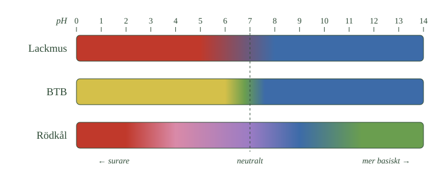

- pH beskriver hur sur eller basisk en lösning är
- Skalan går från 0 till 14
- Under 7 är surt, 7 är neutralt, över 7 är basiskt
- Fler vätejoner betyder lägre pH
- Ett steg på skalan är en tiofaldig skillnad
I förra avsnittet lärde du dig att en syra avger vätejoner till vattnet, och att det är vätejonerna som gör lösningen sur. Nu ska vi se hur man beskriver hur sur en lösning är.
Man kan inte se på ett glas vatten om det är surt. Det behövs ett sätt att mäta, och det sättet kallas pH.
Skalan
pH är ett tal som beskriver hur sur eller basisk en lösning är. I vanliga vattenlösningar går skalan från 0 till 14.
Talen delar in skalan i tre delar. Ett pH under 7 betyder att lösningen är sur. Ett pH på 7 betyder att den är neutral, varken sur eller basisk. Ett pH över 7 betyder att lösningen är basisk, vilket vi kommer till i nästa delkapitel.
Rent vatten har pH 7. Det är alltså mitten av skalan, och utgångspunkten för allt annat.
Fler vätejoner betyder lägre pH
Här är något som är lätt att blanda ihop, så läs långsamt.
Ju fler vätejoner en lösning innehåller, desto lägre är pH. Talen går alltså åt motsatt håll mot det man först skulle tro. En mycket sur lösning har ett lågt tal, inte ett högt.
Magsyran i din mage har pH mellan 1 och 2 och är alltså mycket sur. Citronsaft ligger runt 2 till 3. Kaffe är svagt surt med pH omkring 5. Rent vatten har 7, och en tvållösning kan ha 9 eller 10.
| Ämne | Ungefärligt pH |
|---|---|
| Magsyra | 1–2 |
| Citronsaft | 2–3 |
| Kaffe | 5 |
| Rent vatten | 7 |
| Tvållösning | 9–10 |
Varje steg är tio gånger
Nu kommer det viktigaste i hela avsnittet, och det är också det som förvånar mest.
pH-skalan fungerar inte som en vanlig skala där varje steg är lika stort. Varje steg på pH-skalan betyder tio gånger så många vätejoner.
En lösning med pH 3 har alltså tio gånger fler vätejoner än en lösning med pH 4. Jämför du pH 3 med pH 5 blir skillnaden hundra gånger, och mellan pH 3 och pH 6 tusen gånger.
Det betyder att en liten skillnad i pH är en stor skillnad i verkligheten. Citronsaft med pH 2 är inte lite surare än kaffe med pH 5 — den är tusen gånger surare.
- Vad avgör hur sur en lösning är?
- Vad visar pH-skalan?
- Var går gränsen mellan surt, neutralt och basiskt?
- Åt vilket håll går talen när surheten ökar?
- Hur stor är skillnaden mellan två pH-steg?
Mängden oxoniumjoner avgör hur sur lösningen är
Vi har sett att en syra avger vätejoner när den kommer i kontakt med vatten. Vätejonerna binds till vattenmolekyler och bildar oxoniumjoner, \(\ce{H3O+}\). Det är mängden oxoniumjoner i en vattenlösning som avgör hur sur lösningen är.
För att beskriva hur sur eller basisk en lösning är använder man pH-skalan. Skalan brukar i vanliga vattenlösningar visas från 0 till 14.
- pH under 7 betyder att lösningen är sur.
- pH 7 betyder att lösningen är neutral.
- pH över 7 betyder att lösningen är basisk.
Fler oxoniumjoner ger lägre pH
Ju större koncentrationen av oxoniumjoner är, desto lägre pH har lösningen och desto surare är den.
Det är en riktning som är lätt att missta sig på. Talen går alltså åt motsatt håll mot surheten — en mycket sur lösning har ett lågt tal, inte ett högt.
Magsyra har till exempel mycket lågt pH och är mycket sur. Citronsaft är också sur men har högre pH. Kaffe är svagt surt och ligger ännu närmare pH 7. Rent vatten är neutralt och har pH 7, medan exempelvis många tvållösningar är basiska och har pH över 7.
| Ämne | Ungefärligt pH |
|---|---|
| Magsyra | 1–2 |
| Citronsaft | 2–3 |
| Kaffe | 5 |
| Rent vatten | 7 |
| Tvållösning | 9–10 |
Varje steg på skalan är tio gånger
pH-skalan fungerar inte som en vanlig skala. Ett steg på pH-skalan motsvarar en tiofaldig skillnad i koncentrationen av oxoniumjoner.
En lösning med pH 3 har därför tio gånger högre koncentration av oxoniumjoner än en lösning med pH 4. Jämför man pH 3 med pH 5 är skillnaden hundra gånger, och mellan pH 3 och pH 6 tusen gånger.
Det betyder att en till synes liten skillnad i pH kan motsvara en stor skillnad i hur mycket oxoniumjoner som finns i lösningen.
Citronsaft med pH 2 är alltså inte lite surare än kaffe med pH 5 — den innehåller ungefär tusen gånger fler oxoniumjoner.
Vad talet faktiskt betyder
Standardtexten sa att varje steg på skalan är en tiofaldig skillnad. Det är sant, men det väcker en fråga: varför just tio, och varför slutar skalan vid 14?
Svaret är att pH-talet inte är en godtycklig gradering. Det är ett sätt att skriva en koncentration.
Koncentrationen av oxoniumjoner i en vattenlösning mäts i mol per kubikdecimeter, och talen är obekvämt små. I en neutral lösning är koncentrationen 0,0000001 mol/dm³. Skrivet som tiopotens blir det \(10^{-7}\) mol/dm³, vilket är betydligt lättare att hantera.
Och pH är helt enkelt exponenten, utan minustecknet. En lösning med koncentrationen \(10^{-7}\) har pH 7. En med \(10^{-3}\) har pH 3. En med \(10^{-11}\) har pH 11.
Nu blir den tiofaldiga skillnaden självklar. Går man från \(10^{-3}\) till \(10^{-4}\) har man dividerat med tio, och exponenten har ändrats med ett steg. Skalan är stegvis eftersom tiopotenser är det.
Varför 0 till 14
Här kommer sambandet från förra avsnittets fördjupning tillbaka.
Vattenmolekyler reagerar med varandra och bildar hela tiden små mängder oxoniumjoner och hydroxidjoner. De två koncentrationerna är kopplade: produkten av dem är alltid \(10^{-14}\) i vattenlösning.
I rent vatten finns lika många av varje, alltså \(10^{-7}\) av båda — och \(10^{-7}\) gånger \(10^{-7}\) blir just \(10^{-14}\). Det är därför neutralt ligger vid 7 och inte vid något annat tal.
Tillsätter du syra ökar oxoniumjonerna. Men eftersom produkten måste förbli \(10^{-14}\) måste hydroxidjonerna minska lika mycket. De två talen rör sig alltid åt motsatta håll, och tillsammans går de från 14 till 0.
Om modellen: standardtexten gav pH som ett tal med en regel om tiofaldighet. Med tiopotenserna blir pH i stället en direkt avläsning av hur många oxoniumjoner som finns, och skalans mittpunkt faller ut av sig själv.
Vill du gå vidare — hur man räknar med koncentrationerna, vad pOH är, och varför skalans ändpunkter inte är absoluta — finns det i djupdykningen pH-värdet: oxoniumjoner, hydroxidjoner och mol.
- En indikator är ett ämne som byter färg beroende på pH
- Lackmus visar surt eller basiskt
- BTB är gult i surt, grönt i neutralt, blått i basiskt
- Universalindikator och pH-papper visar ungefärligt pH
- En pH-mätare ger ett exakt tal
Nu vet du vad pH är. Men hur tar man reda på vilket pH en lösning har?
Ett sätt är att använda en indikator. Det är ett ämne som byter färg beroende på om lösningen är sur eller basisk. Man droppar i lite av indikatorn, eller doppar ett papper, och läser av färgen.
Lackmus
Lackmus är den enklaste indikatorn och används ofta som papper.
Blått lackmuspapper blir rött i en sur lösning. Rött lackmuspapper blir blått i en basisk lösning. Händer ingenting alls är lösningen varken sur eller basisk.
Lackmus är snabbt och enkelt, men det säger bara om lösningen är sur eller basisk. Något pH-värde får du inte.
BTB
BTB är en vätska som droppas i lösningen, och den ger lite mer information än lackmus.
BTB blir gult i sura lösningar, grönt när lösningen är ungefär neutral och blått i basiska. Tre färger i stället för två gör att du kan se om du är nära mitten av skalan.
Universalindikator och pH-papper
Vill du veta ungefär vilket pH lösningen har använder du universalindikator. Den innehåller flera olika indikatorämnen blandade, och färgen skiftar gradvis genom hela skalan.
Färgen jämförs med en färgskala där varje färg motsvarar ett pH-värde. pH-papper fungerar likadant — du doppar papperet, det byter färg, och du jämför.
Rödkål
Du kan tillverka en indikator själv av rödkål.
Rödkål innehåller färgämnen som ändrar färg beroende på pH. Kokar du kål i vatten och sparar vattnet får du en indikator som blir röd eller rosa i surt, lila i neutralt och går mot blått och grönt i basiskt.
Det gör att du kan undersöka pH hemma i köket, till exempel med citronsaft, kranvatten och tvålvatten.
- Vilken färg har BTB vid pH 4?
- Vid vilket pH slår lackmus om?
- Vilken indikator ger flest olika färger?
- Vilken skulle du välja om du vill veta om en lösning är nära neutral?

När det måste bli exakt
Indikatorer ger ett ungefärligt värde. Det räcker ofta, men ibland behöver man veta mer noggrant.
Då används en pH-mätare. Den har en elektrod som doppas i lösningen, och på skärmen visas pH som ett tal med decimaler.
Vilken metod man väljer beror alltså på vad man vill veta. Räcker det att veta om lösningen är sur eller basisk är lackmus snabbast. Behöver du ett exakt värde är mätaren rätt verktyg.
- Vad är en indikator?
- Vad visar lackmus, och vad visar den inte?
- Vilken indikator är bäst nära neutralt?
- Varför byter indikatorer färg över huvud taget?
- När räcker en indikator, och när behövs en mätare?
En indikator byter färg beroende på pH
För att ta reda på om en lösning är sur, neutral eller basisk kan man använda en indikator. En indikator är ett ämne som ändrar färg beroende på lösningens pH.
Indikatorer är det snabbaste sättet att undersöka en lösning. De kräver ingen utrustning utöver ämnet självt, och resultatet syns omedelbart.
Nackdelen är att svaret blir ungefärligt. Vill man ha ett exakt värde behövs ett instrument, vilket den sista delen handlar om.
Lackmus och BTB visar surt eller basiskt
Lackmus är en enkel indikator. Blått lackmuspapper blir rött i en sur lösning och rött lackmuspapper blir blått i en basisk lösning.
Lackmus visar framför allt om en lösning är sur eller basisk, men ger inte något exakt pH-värde.
BTB, bromtymolblått, är en annan vanlig indikator. BTB är gult i sura lösningar, grönt omkring neutralt och blått i basiska lösningar. Den gör det därför lätt att se om en lösning är sur, neutral eller basisk.
Att BTB har tre färger i stället för två gör den särskilt användbar när man vill veta om man är nära neutralt.
Universalindikator och rödkål visar hela skalan
Universalindikator består av flera olika indikatorämnen och kan visa ett större område av pH-skalan. Färgen jämförs med en färgskala för att uppskatta lösningens pH. pH-papper fungerar på liknande sätt: papperet ändrar färg och färgen jämförs med en skala.
Det går också att tillverka en indikator av rödkål. Rödkål innehåller färgämnen som ändrar färg beroende på pH. Rödkålsindikator blir röd eller rosa i sura lösningar, lila omkring neutralt och går mot blått och grönt i basiska lösningar.
Därför går det att göra enkla undersökningar av pH även hemma, till exempel med citronsaft, vatten och en lösning av tvål.
Indikatorn är själv ett ämne som reagerar
Att indikatorer kan byta färg beror på att de själva är ämnen som reagerar med syror och baser. En indikator är oftast ett ämne som själv kan avge en vätejon.
När den avger sin vätejon ändras molekylens uppbyggnad, och den nya formen har en annan färg än den ursprungliga. Färgen visar alltså vilken form av indikatorn som dominerar i lösningen, och det beror i sin tur på lösningens pH.
Indikatorer ger framför allt ett ungefärligt pH-värde. Om man behöver veta pH mer exakt använder man i stället en pH-mätare. Den har en elektrod som placeras i lösningen och instrumentet visar pH som ett tal.
Vilken metod man väljer beror därför på vad man vill ta reda på. För att snabbt avgöra om en lösning är sur eller basisk kan en indikator vara tillräcklig. Om man behöver ett mer exakt värde är en pH-mätare ett bättre val.
Varje indikator har sitt eget område
Standardtexten sa att indikatorn byter färg när den avger sin vätejon. Det leder till en följdfråga: vid vilket pH sker omslaget?
Svaret är att det beror på indikatorn, och att varje indikator har sitt eget omslagsområde — ett intervall på pH-skalan där färgen skiftar från den ena formen till den andra.
BTB slår om mellan ungefär pH 6 och 7,6. Under det området är nästan alla molekyler i sin sura form och lösningen är gul; över det är nästan alla i sin basiska form och lösningen är blå. Mitt i området finns båda formerna samtidigt, och blandningen av gult och blått ser grön ut.
Lackmus slår om runt pH 6,5, fenolftalein runt 8 till 10 och metylorange runt 3 till 4,5.
Därför finns universalindikatorn
Nu blir universalindikatorn begriplig. Den är ingen enskild indikator utan en blandning av flera, med olika omslagsområden.
Vid varje pH-värde har blandningens ingredienser olika färger, och summan blir en unik ton. Det är därför färgskalan glider jämnt från rött till blått i stället för att hoppa mellan två färger.
Att välja rätt indikator
Det här har praktisk betydelse. Vill man veta exakt när en syra är neutraliserad måste man välja en indikator vars omslagsområde ligger vid rätt pH.
Neutraliserar man en stark syra med en stark bas hamnar slutpunkten nära pH 7, och då fungerar BTB utmärkt. Men neutraliserar man en svag syra med en stark bas hamnar slutpunkten över pH 7, och då slår BTB om för tidigt. Där används fenolftalein i stället.
Om modellen: standardtexten beskrev indikatorer som ämnen som byter färg vid surt eller basiskt, som om omslaget skedde vid pH 7. Det gör det sällan. Varje indikator har sitt eget område, och att välja rätt indikator till rätt reaktion är en del av kemiskt hantverk.
Vill du veta mer om hur indikatormolekylen faktiskt ändrar färg, vad antocyaninerna i rödkål är, och hur en pH-meter mäter — läs djupdykningen Indikatorer och mätning av pH.
Laddar övningskort…
Laddar frågor ...